Table of contents:
tmux is a program which runs in a terminal and allows multiple other terminal programs to be run inside it. Each program inside tmux gets its own terminal managed by tmux, which can be accessed from the single terminal where tmux is running - this is called multiplexing and tmux is a terminal multiplexer.
tmux - and any programs running inside it - may be detatched from the terminal where it is running (the outside terminal) and later reattatched to the same or another terminal.
Programs run inside tmux may be full screen interactive programs like vi(1) or top(1), shells like bash(1) or ksh(1), or any other program that can be run in a Unix terminal.
There is a powerful feature set to access, manage and organize programs inside tmux, both interactively and from scripts.
The main uses of tmux are to:
For example:
Here is a screenshot of tmux in an xterm(1) showing the shell:
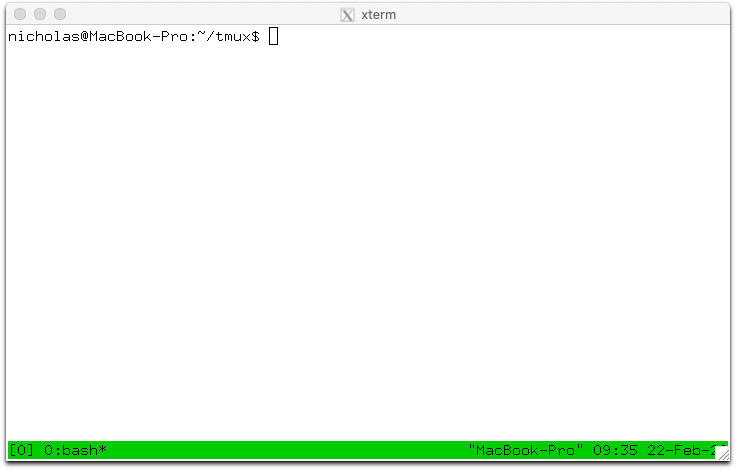
This document gives an overview of some of tmux's key concepts, a description of how to use the main features interactively and some information of basic customization and configuration.
Note that this document may mention features only available in the latest tmux release. Only the latest tmux release is supported. Release are made approximately every six months.
tmux may be installed from package management systems on most major platforms. See Installing for instructions on how to install tmux or how to build it from source.
Here are several places to find documentation and help about tmux:
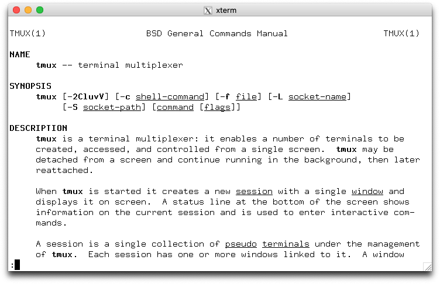
The manual page has detailed reference documentation on tmux and a description of every command, flag and option. Once tmux is installed it is also available in section 1:
$ man 1 tmux
tmux has a set of basic concepts and terms it is important to be familiar with. This section gives a description of ow the terminals inside tmux are grouped together and the various terms tmux uses.
tmux keeps all its state in a single main process, called the tmux server. This runs in the background and manages all the programs running inside tmux and keeps track of their output. The tmux server is started automatically when the user runs a tmux command and by default exits when there are no running programs.
Users attach to the tmux server by starting a client. This takes over the terminal where it is run and talks to the server using a socket file in /tmp. Each client runs in one terminal, which may be an X(7) terminal such as xterm(1), the system console, or a terminal inside another program (such as tmux itself). Each client is identified by the name of the outside terminal where it is started, for example /dev/ttypf.
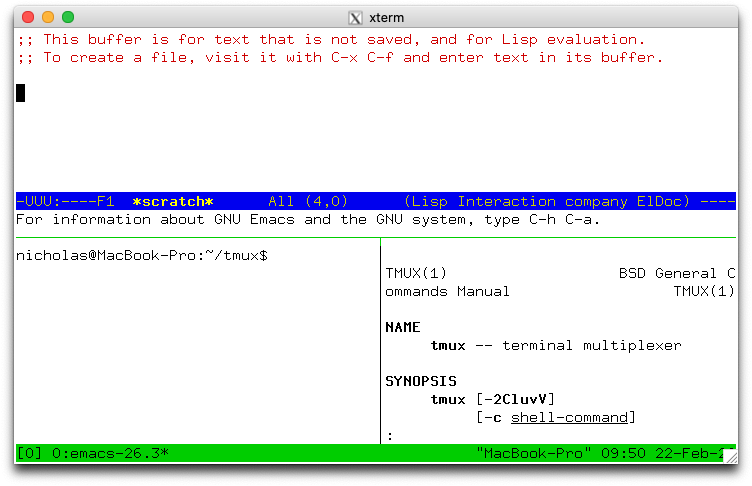
Every terminal inside tmux belongs to one pane, this is a rectangular area which shows the content of the terminal inside tmux. Becuase each terminal inside tmux is shown in only one pane, the term pane can be used to mean all of the pane, the terminal and the program running inside it. The screenshot to the right shows tmux with panes.Each pane appears in one window. A window is made up of one or more panes which together cover its entire area - so multiple panes may be visible at the same time. A window normally takes up the whole of the terminal where tmux is attatched, but it can be bigger or smaller. The sizes and positions of all the panes in a window is called the window layout.
Every window has a name - by default tmux will choose one but it can be changed by the user. Window names do not have to be unique, windows are usually identified by the session and not the window index rather than their name.
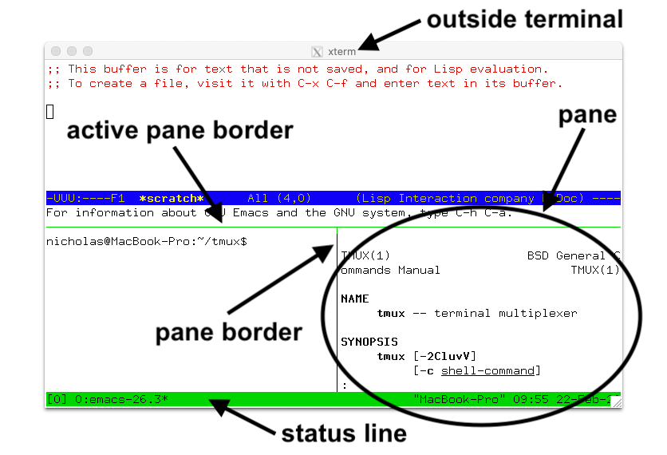
Each pane is separated from the panes around it by a line, this is called the pane border. There is one pane in each window called the active pane, this is where any text typed is sent and is the default pane used for commands that target the window. The pane border of the active pane is marked in green, or if there are only two panes then the top, bottom, left or right half of the border is green.Multiple windows are grouped together into sessions. If a window is part of a session, it is said to be linked to that session. Windows may be linked to multiple sessions at the same time, although mostly they are only in one. Each window in a session has a number, called the window index - the same window may be linked at different indexes in the different sessions. A session's window list is all the windows linked to that session in order of their indexes.
Each session has one current window, this is the window displayed when the session is attatched and is the default window for any ocmmands that target the session. If the current window is changed, the previous current window becomes known as the last window.
A session may be attatched to one or more clients, which means it is shown on the outside terminal where that client is running. Any text typed into that outside terminal is sent to the active pane in the current window of the attached session. Sessions do not have an index but they do habe a name, which must be unique.
In summary:
| Term | Description |
|---|---|
| Client | Attatches to a tmux session from an outside terminal such as xterm(1) |
| Session | Groups one or more windows together |
| Window | Groups one or more panes together, linked to one or more sessions |
| Pane | Contains a terminal and running program, appears in one window |
| Active pane | The pane in the current window where typing is send; one per window |
| Current window | The window in the attached session where typing is sent; one per session |
| Last window | The previous current window |
| Session name | The name of a session, defaults to a number starting from zero |
| Window list | The list of windows in a session in order by number |
| Window name | The name of a window, defaults to the name of the running program in the active pane |
| Window index | The number of a window in a session's window list |
| Window layout | The size and posision of the panes in a window |
To create the first tmux session, tmux is run from the shell. A new session is created using the new-session command - new for short:
$ tmux new
Without arguments, new-session creates a new session and attaches to it. Because this is the first session, the tmux server is started and the tmux run from the shell becomes the first client and attaches to it.
The new session will have one window (at index 0) with a single pane containing a shell. The shell prompt should appear at the top of the terminal and the green status line at the bottom (more on the status line is below)
By default, the first session will be called 0, the second 1 and so on. new-session allows a name to be specified for the session with the -s flag:
$ tmux new -smysession
This creates a new session named mysession. A command may be given instead of running a shell by passing additional arguments. If one argument is given, tmux will pass it to the shell, if more than one it runs the command directly.
For example these run emacs(1):
$ tmux new 'emacs ~/.tmux.conf'
Or:
$ tmux new -- emacs ~/.tmux.conf
By default, tmux calls the first window in the session after whatever is running in it. The -n flag gives a name to use instead, in this case a window mytopwindow running top(1):
$ tmux new -nmytopwindow top
new-session has other flags - some are covered below. A full list is in the tmux manual.
When a tmux client is attached, it shows a status line on the bottom line of the screen. By default is green and shows:
[0].ksh at index 0: 0:ksh.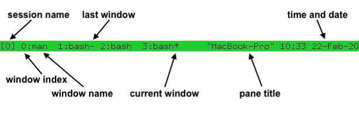
As new windows are opened, the window list grows - if there are too many windows to fit on the width of the terminal, a < or > will be added at the left or right or both to show there are hidden windows.
In the window list, the current window is marked with a * after the name, and the last window with a -.
Once a tmux client is attached, any keys entered are forwarded to the program running in the active pane of the current window. For keys that control tmux itself, a special key must be pressed first - this is called the prefix keys
The default prefix key is C-b, which means the Ctrl key and b. In tmux, modifier keys are shown by prefixing a key with C- for the control key, M- for the meta key (normally Alt on modern computers) and S- for the shift key. These may be combined together, so C-M-x means pressing the control key, meta key and x together.
Pressing C-b twice sends the C-b key to the program running in the active pane
Every default tmux key binding has a short description to help remember what the key does. A list of all the keys and their corresponding description texts can be seen by pressing C-b ?.
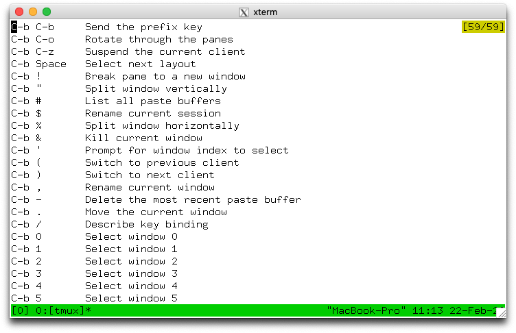
C-b ? enters view mode to show text. A pane in view mode has its own key bindings which do not need the prefix key. These broadly follow emacs(1). The most important are Up, Down, C-Up, C-Down to scroll up and down, and q to exit the mode. The line number of the top visible line together with the total number of lines is shown in the top right.
Alternatively, the same list can be seen from the shell by running:
tmux lsk -N|more
C-b / shows the description of a single key - a prompt at the bottom of the terminal appears. Pressing a key will show its description in the same place. For example, pressing C-b / then ? shows:
C-b ? List key bindings
tmux has a large set of commands. These all have a name like new-window or new-session or list-keys and many also have a shorter alias as neww or new or lsk.
Any time a key binding is used, it runs one or more tmux commands. For example, C-b c runs the new-window command.
Commands can also be used from the shell, as with new-session and list-keys above.
Each command has zero or more flags, in the same way as standard Unix commands. Flags may or may not take a single argument themselves. In addition, commands may take additional arguments after the flags. Flags are passed after the flags. Flags are passed after the command, for example to run the new-session command (alias new) with flags -d and -n:
$ tmux new-session -d -nmysession
All commands and their flags are documented in the tmux manual page.
This document focuses on the available key bindings, but commands are mentioned for information or where there is a useful flag. They can be entered from the shell or from the command prompt, described in the next section.
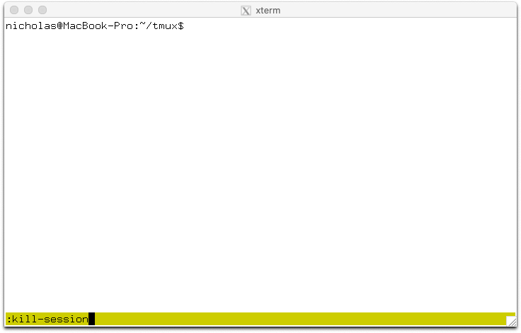
tmux has an interactive command prompt. This can be opened by pressing C-b :
At the prompt, commands can be entered similarly to how they are at the shell. Output will either be shown for a short period in the status line, or switch the active pane into view mode.
By default, the command prompt uses keys similar to emacs; however, if the VISUAL or EDITOR environment variables are set to something containing vi (such as vi or vim nvi), then vi(1)-style keys are used instead.
Multiple commands may be entered together at the command prompt by separating them with a semicolon (;). This is called a command sequence.
Detaching from tmux means that the client exits and detaches from the outside terminal, returning to the shell and leaving tmux session and any programs inside it running in the background. To detach tmux, the C-b d key binding is used. When tmux detaches, it will print a message with the session name:
[detached (from session mysession)]
The attach-session command attaches to an existing session. Without arguments, it will attach to the most recently used session that is not already attached:
$ tmux attach
Or -t gives the name of a session to attach to:
$ tmux attach -tmysession
By default, attaching to a session does not detach from any other clients attached to the same session. The -d flag does this:
$ tmux attach -dtmysession
The new-session command has a -A flag to attach to an existing session if it exists, or create a new one if it does not. For a session named mysession:
$ tmux new -Asmysession
The -D flag may be added to mkae new-session also behave like attach-session with -d and detach any other clients attached to the session.
The list-sessions command (alias ls) shows a list of available sessions that can be attached. This shows four sessions called 1, 2, myothersession and mysession:
$ tmux ls
1: 3 windows (created Sat Feb 22 11:44:51 2020)
2: 1 windows (created Sat Fab 22 11:44:51 2020)
myothersession: 2 windows (created Sat Feb 22 11:44:51 2020)
mysession: 1 windows (created Sat Feb 22 11:44:51 2020)
If there are no sessions, windows or panes inside tmux, the server will exit. Ift can also be entirely killed using the kill-server command. For example, at the command prompt:
:kill-server
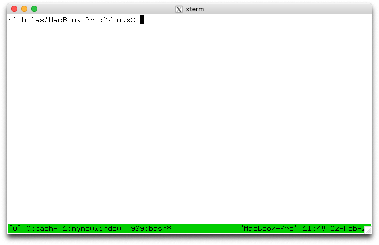
A new window can be created in an attached session with the C-b c key binding which runs the new-window command. The new window is created at the first available index - so the second window will have index 1. The new window becomes the current window of the session.
If there are any gaps in the window list, they are filled by new windows. So if there are windows with indexes 0 and 2, the next new window will be created as index 1.
The new-window command has some useful flags which can be used with the command prompt:
-d flag creates the window, but does not make it the current window.-n allows a name for the new window to be given. For example using the command prompt to create a new window called mynewwindow without making it the current window:
:neww -dnmynewwindow
-t flag specifies a terget for the window. Command targets have a special syntax, but for simple use with new-window it use enough just to give a window index. THis creates a window at index 999:
:neww -t999
A command to be run in the new window may be given to new-window in the same way as new-session. For example to create a new window running top(1):
:neww top
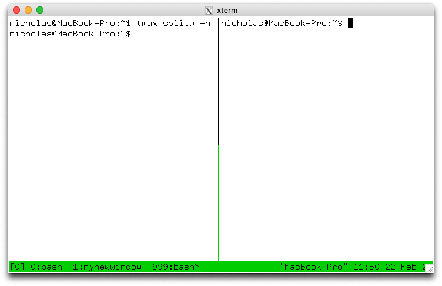
A pane is created by plitting a window. This is done with the split-window command which is bound to two keys by default:
C-b % splits the current pane into two horizontally, producing two panes next to each other, one on the left and one on the right.C-b " splits the current pane into two vertically, producing two panes one above the other.Each time a pane is plait into two, each of those panes may be split again using the same key bindings, util the pane becomes too small.
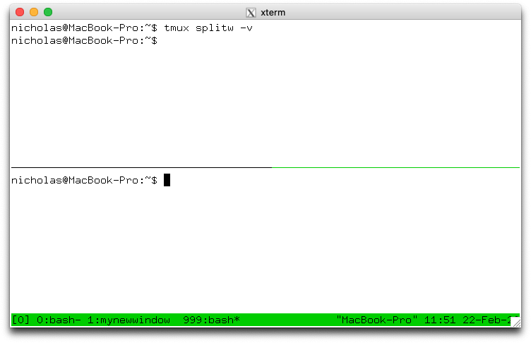
split-window has several useful flags:
-h does a horizontal split and -v a vertical split-d does not change the active pane to the newly created pane.-f makes a new pane spannign the whole width or height of the window instead of being constrained to the size of hte pane being split.-b puts the new pane to the left or above of the pane being split instead of to the right or below.A command to be run in the new pane may be given to split-window in the same way as new-session and new-window
There are several key bindings to change the current window of a session:
C-b 0 changes to window 0, C-b 1 to window 1, up to window C-b 9 for window 9.C-b ' prompts for a window index and changes to that window.
C-b n changes to the next window in the window list by number. So pressing C-b n when in window 1 will change to window 2 if it exists.C-b p changes to the previous window in the window list by numberC-b l changes to the last window, which is the window that was the current window before the window that is now.These are all variations of the select-window command.
The active pane can be changed between the panes in a window with these key bindings:
C-b Up, C-b Down, C-b Left and C-b Right change to the pane above, below, left or right of the active pane. These keys wrap around the window, so pressing C-b Down on a pane at the bottom will change to a pane at the top.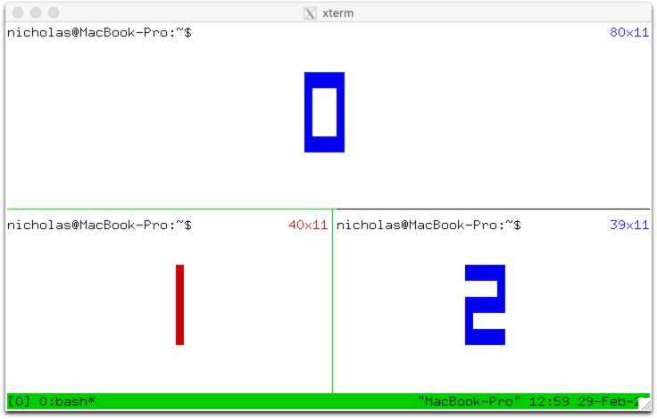
C-b q prints the pane numbers and their sizes on top of the panes for a short time. Pressing one of the number keys before the y dissapear changes the active pane to the chosen pane, so C-b q 1 will change to the pane number 1.C-b o moves to the next pane by pane number and C-b C-o swaps that pane with the active pane, so they exchange positions and sizes in the window.These use the select-pane and display-panes commands.
Pane numbers are not fixed, instead panes are numbered by their position in the window, so if the pane with number 0 is swapped with the pane in number 1, the numbers are swapped as well as the panes themselves.
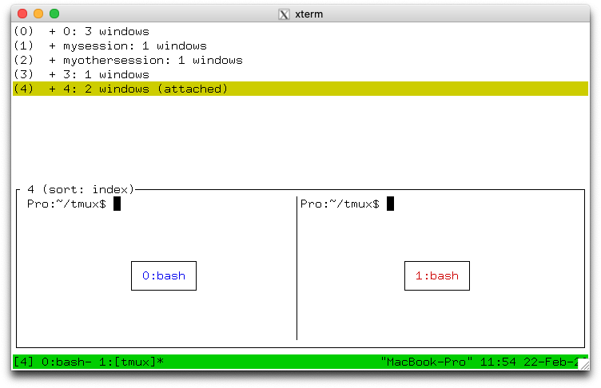
tmux includes a mode where sessions, windows, or panes can be chosen from a tree, this is called tree mode. It can be used to browse sessions, windows, and panes; to change the attached session, the current window or active pane; to kill sessions, windows, and panes; or apply a command to serveral at once by tagging them
There are two key bindings to enter tree mode: C-b s starts showing only sessons and with the attached session selected; C-b w starts with sessions expanded so windows are shown and with the current window in the attached session selected.
Tree mode splits the window into two sections: the top half has a tree of sessions, windows and panes and the bottom half has a preview of the area around the cursor in each pane. For sessions the preview shows the active panes in as many windows will fit; for windows as many panes as will fit; and for panes only the selected pane.
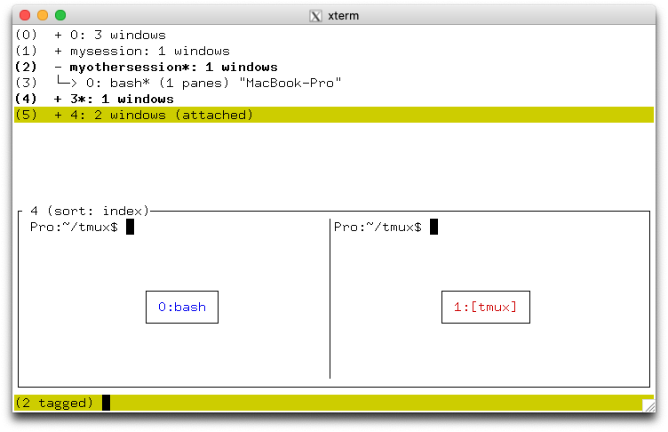
Keys to control tree mode to not require the prefix. The list may be navigated with the Up and Down keys. Enter changes to the selected item (it becomes the attached session, current window or active pane) and exits the mode. Right expands the item if possible - sessions expand to show their windows and windows to show their panes. Left collapses the item to hide any windows or panes. O changes the order of the items and q exits tree mode.
Items in the tree are tagged by pressing t and untagged by pressing t again. Tagged items are shown in bold and with * after hteir name. all tagged items may be untagged by pressing T. Tagged items may be killed together by pressing X, or a command applied to them all by pressing : for a prompt.
Each item in the tree has a shortcut key in brackets at the start of a line. Pressing this key will immediately choose that item (as if it had been selected and Enter pressed). THe first ten items are keys 0 to 9 and after that keys M-a to M-z are used.
This is a list of the keys available in tree mode without pressing the prefix key:
| Key | Function |
|---|---|
Enter |
Change the attached session, current window or active pane |
Up |
Select previous item | Down |
Select next item |
Right |
Expand item |
Left |
Collapse item |
x |
Kill selected item |
X |
Kill tagged items |
< |
Scroll preview left |
> |
Scroll preview right |
C-s |
Search by name |
n |
Repeat last search |
t |
Toggle if item is tagged |
T |
Tag no items |
C-t |
Tag all items |
: |
Prompt for a command to run for the selected item or each tagged item |
O |
Change sort field |
r |
Reverse sort order |
v |
Toggle preview |
q |
Exit tree mode |
Tree mode is activated with the choose-tree command.